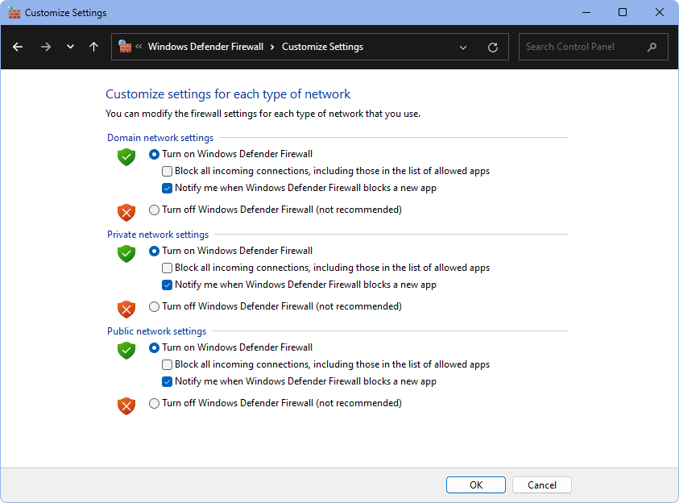

Firewall
Firewalls help protect computers by screening out hackers, viruses, and worms that try to reach computers. It is important to review firewall issues for Computer Security.
Firewalls control incoming and outgoing network traffic. They establish barriers between the trusted, secure internal network and another network that is assumed to be not secure. Firewalls act by blocking all the ports on a computer. A port is simply a channel of communication that computers can use, and there are thousands of them available.
Windows Firewall
Below are general guidelines for turning the Windows Firewall on/off.
- On the Server, go to the Control Panel.

- At the very bottom, click on Windows Defender Firewall.

- On the left, click Turn Windows Defender Firewall on or off.

There are two kinds of firewalls:
- Hardware Firewalls: Protect computer systems from attacks outside the local network. If connected to the internet via a cable modem or DSL, a router which acts as a firewall is necessary. The cable from the cable modem or DSL modem is connected to the Wide Area Network (WAN) port on the router. The LAN port of the router is then connected to the switch so that all computers have access to the internet. Some routers have a built-in switch, and in this case all the computers can be plugged into those ports instead of using an external switch. The router hides the LAN from outside computers, protecting from many types of virus attacks.
- Software Firewalls: Help protect an individual computer from attacks from other computers in the office. They act as a second line of defense. For example, if one computer in the office gets infected, it can't spread to the others. Since Open Dental uses ports, software firewall settings will need to be adjusted. Each firewall has a different way of setting up which ports get blocked, but users should always be able to add ports to an exceptions list.
Many antivirus software programs have their own software firewall feature. We recommend using the Windows Firewall instead, and turning off or uninstalling the software's firewall or internet security. If the practice still want to use its own firewall, then Port 3306 must be open on the server; not on each workstation.